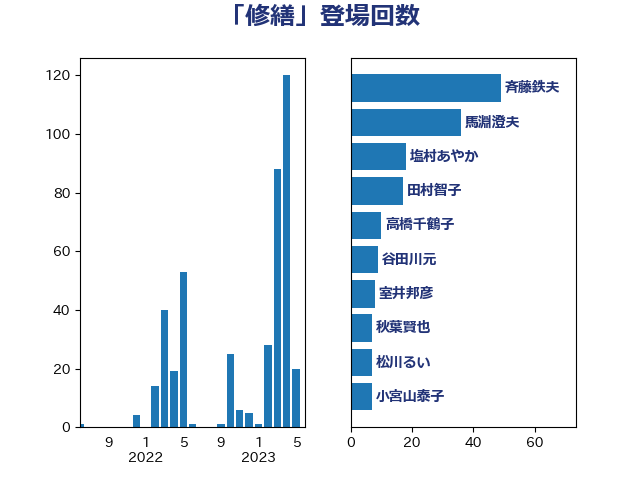

単語「修繕」

| 斉藤鉄夫 | 公明党 | 49 回 |
| 馬淵澄夫 | 立憲民主党 | 36 回 |
| 塩村あやか | 立憲民主党 | 18 回 |
| 田村智子 | 日本共産党 | 17 回 |
| 高橋千鶴子 | 日本共産党 | 10 回 |
| 谷田川元 | 立憲民主党 | 9 回 |
| 室井邦彦 | 日本維新の会 | 8 回 |
| 秋葉賢也 | 自由民主党 | 7 回 |
| 松川るい | 自由民主党 | 7 回 |
| 小宮山泰子 | 立憲民主党 | 7 回 |
| 太栄志 | 立憲民主党 | 7 回 |
| 前川清成 | 日本維新の会 | 7 回 |
| 和田政宗 | 自由民主党 | 6 回 |
| 長友慎治 | 国民民主党 | 5 回 |
| 石垣のりこ | 立憲民主党 | 5 回 |
| 末次精一 | 立憲民主党 | 5 回 |
| 早坂敦 | 日本維新の会 | 5 回 |
| 伊藤俊輔 | 立憲民主党 | 5 回 |
| 五十嵐清 | 自由民主党 | 5 回 |
| 福島伸享 | 無所属 | 4 回 |
| 打越さく良 | 立憲民主党 | 4 回 |
| 岸田文雄 | 自由民主党 | 4 回 |
| 城井崇 | 立憲民主党 | 4 回 |
| 金城泰邦 | 公明党 | 3 回 |
| 末松信介 | 自由民主党 | 3 回 |
| 山本剛正 | 日本維新の会 | 3 回 |
| 中川康洋 | 公明党 | 3 回 |
| 長坂康正 | 自由民主党 | 2 回 |
| 鈴木義弘 | 国民民主党 | 2 回 |
| 川田龍平 | 立憲民主党 | 2 回 |
| 鬼木誠 | 立憲民主党 | 1 回 |
| 高良鉄美 | 無所属 | 1 回 |
| 音喜多駿 | 日本維新の会 | 1 回 |
| 野村哲郎 | 自由民主党 | 1 回 |
| 野中厚 | 自由民主党 | 1 回 |
| 酒井庸行 | 自由民主党 | 1 回 |
| 赤木正幸 | 日本維新の会 | 1 回 |
| 若松謙維 | 公明党 | 1 回 |
| 自見はなこ | 自由民主党 | 1 回 |
| 空本誠喜 | 日本維新の会 | 1 回 |
| 石川香織 | 立憲民主党 | 1 回 |
| 石井浩郎 | 自由民主党 | 1 回 |
| 石井正弘 | 自由民主党 | 1 回 |
| 矢倉克夫 | 公明党 | 1 回 |
| 田村貴昭 | 日本共産党 | 1 回 |
| 田嶋要 | 立憲民主党 | 1 回 |
| 浮島智子 | 公明党 | 1 回 |
| 浜田靖一 | 自由民主党 | 1 回 |
| 河西宏一 | 公明党 | 1 回 |
| 梅谷守 | 立憲民主党 | 1 回 |
| 柳本顕 | 自由民主党 | 1 回 |
| 松島みどり | 自由民主党 | 1 回 |
| 杉久武 | 公明党 | 1 回 |
| 新垣邦男 | 立憲民主党 | 1 回 |
| 後藤祐一 | 立憲民主党 | 1 回 |
| 平木大作 | 公明党 | 1 回 |
| 岡田直樹 | 自由民主党 | 1 回 |
| 山谷えり子 | 自由民主党 | 1 回 |
| 山本左近 | 自由民主党 | 1 回 |
| 山口壯 | 自由民主党 | 1 回 |
| 小野泰輔 | 日本維新の会 | 1 回 |
| 小池晃 | 日本共産党 | 1 回 |
| 小森卓郎 | 自由民主党 | 1 回 |
| 小山展弘 | 立憲民主党 | 1 回 |
| 宮本徹 | 日本共産党 | 1 回 |
| 宮本周司 | 自由民主党 | 1 回 |
| 宮崎雅夫 | 自由民主党 | 1 回 |
| 宮崎勝 | 公明党 | 1 回 |
| 大西健介 | 立憲民主党 | 1 回 |
| 大串博志 | 立憲民主党 | 1 回 |
| 加藤鮎子 | 自由民主党 | 1 回 |
| 加藤勝信 | 自由民主党 | 1 回 |
| 伊藤孝恵 | 国民民主党 | 1 回 |
| 井林辰憲 | 自由民主党 | 1 回 |
| 井上哲士 | 日本共産党 | 1 回 |
| 上野賢一郎 | 自由民主党 | 1 回 |
| 上田英俊 | 自由民主党 | 1 回 |
| 上田勇 | 公明党 | 1 回 |
| 一谷勇一郎 | 日本維新の会 | 1 回 |
| たがや亮 | れいわ新選組 | 1 回 |